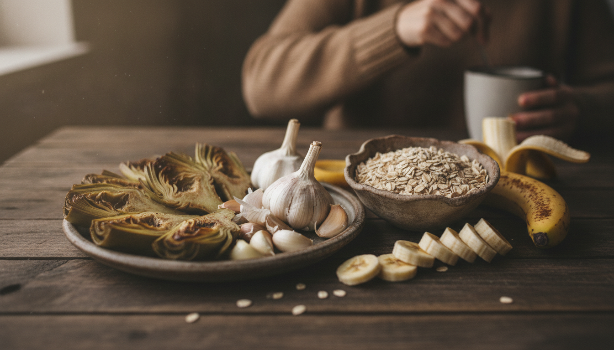

Why the Gut Wakes You at 3 AM
The digital numbers glare: 3:00 AM. Again. Your body, a vessel of discomfort, churns with an all-too-familiar ache – bloating, reflux, or just a generalized unease. This isn't merely a bad night; it's a persistent disruption, gut issues consistently pulling you from sleep. It surfaces exactly when deep sleep should prevail, leaving you depleted, the usual culprits of stress or anxiety failing to explain the pattern.
The true saboteur often operates in the intricate, often overlooked communication pathway between your gut and your brain. This gut-brain axis—a direct, bidirectional signaling network—continuously transmits information via the vagus nerve and a complex array of neuroendocrine signals. It profoundly shapes your mood, stress response, and, critically, your sleep architecture. When your gut microbiome, the vast community of bacteria residing within you, falls out of balance, it disrupts this delicate dialogue. This imbalance drives inflammation and discomfort, triggering awakenings precisely when your body should be in its most restorative sleep phases. This physically disrupts your fundamental need for rest.
How the Gut Microbiome Orchestrates Sleep and Circadian Rhythm
The imbalance extends beyond mere discomfort. It fundamentally disrupts the precise chemical signals your brain requires for sleep.
Your gut, it turns out, operates as a sophisticated biochemical factory, directly influencing the neurochemicals that govern your sleep-wake cycle and the intrinsic rhythm of your days and nights.
Consider serotonin. Though commonly associated with mood, the gut produces approximately 95% of the body's serotonin (NIH), not the brain. This critical neurotransmitter serves as the direct precursor to melatonin, the hormone signaling to your brain that it is time for sleep. A compromised gut environment, therefore, impedes serotonin synthesis, directly undermining melatonin production and making it harder to initiate and sustain sleep.
Beyond melatonin's precursor role, gut bacteria also synthesize GABA, another inhibitory neurotransmitter that calms brain activity and fosters relaxation, smoothing the transition into sleep. A robust, diverse microbial community in your gut correlates directly with improved sleep efficiency and greater total sleep time (AASM). Microbial variety is essential for restorative rest.
Then there are short-chain fatty acids (SCFAs), metabolic byproducts of bacterial fermentation in the colon. Compounds like butyrate, specifically, do more than just nourish gut cells; they traverse the blood-brain barrier to directly enhance non-REM sleep, the deep, restorative phase essential for physical repair and memory consolidation (NIH). These SCFAs also play a pivotal role in stabilizing your body's master internal clock, the circadian rhythm. Through intricate interactions with various signaling pathways, the gut microbiome helps maintain the alignment of these internal rhythms, preventing erratic fluctuations that leave you perpetually out of sync and trigger premature awakenings when sleep architecture should be most stable.
Fueling Rest: Dietary Strategies for Gut-Sleep Alignment
How do we actively support these internal rhythms and prevent that jarring 3 AM awakening? We must consider the very fuel shaping your gut's ecosystem: your diet. Your food choices do not just nourish your body; they feed the trillions of microbes orchestrating your internal clocks and modulating inflammatory responses.
Prebiotics: Fueling Sleep's Architects
Dietary prebiotics, the indigestible fibers abundant in many plant foods, prove crucial. They selectively nourish beneficial gut bacteria, which then produce short-chain fatty acids. These SCFAs reduce systemic inflammation and influence sleep architecture by modulating immune pathways (NIH). Research indicates a diet rich in prebiotics improves both non-REM and REM sleep, particularly after periods of stress (AASM). Integrate these vital fibers through foods such as onions, garlic, leeks, asparagus, and slightly under-ripe bananas.
Probiotic Interventions: Direct Microbial Support
Beyond feeding existing microbes, specific probiotic interventions offer direct support. Certain strains, particularly from the Lactobacillus and Bifidobacterium families, significantly reduce insomnia severity (Cochrane) by influencing the production of sleep-associated neurotransmitters like serotonin and GABA. Incorporate fermented foods such as kefir, sauerkraut, kimchi, and live-culture yogurt as excellent natural sources.
Tryptophan-Rich Foods: Building Blocks for Rest
While the gut contributes significantly to neurotransmitter metabolism, the foundational amino acid tryptophan remains essential for synthesizing serotonin and, subsequently, melatonin—your body's primary sleep hormone. Ensuring adequate intake from foods like turkey, chicken, eggs, nuts, and seeds provides the necessary raw material for your system to reliably produce these sleep-promoting compounds.
Targeted Support: The Supplement Question
A diverse, whole-food diet should always be your primary strategy. However, specific probiotic supplements offer targeted support. If you consider supplementation, seek formulations that include well-researched strains such as Lactobacillus plantarum or Bifidobacterium longum, which demonstrate benefits for the gut-brain axis. Always discuss specific supplements with your clinician to ensure they align with your individual health profile and current medications.

A 7-Day Gut-Sleep Protocol for Restorative Nights
Isolated interventions alone often fall short. A truly restorative shift in sleep architecture demands a consistent, integrated approach to daily rhythms, particularly those governing your gut. Chronic insomnia, for instance, shows decreased gut microbiota diversity (PLoS ONE 2019), highlighting the need for a targeted, consistent strategy. A disciplined approach to diet and eating windows effectively resynchronizes both gut and sleep rhythms (Nutrients 2020), while even small, targeted dietary shifts produce measurable improvements in sleep quality over time (Frontiers in Behavioral Neuroscience 2017). Implement this 7-day protocol to realign your gut and reclaim your rest.
Your 7-Day Gut-Sleep Protocol
- Diversify Fiber Intake: Consume a wide variety of plant-based foods daily—fruits, vegetables, legumes, and whole grains—to cultivate a diverse microbiome.
- Integrate Fermented Foods: Incorporate a serving of fermented foods, such as kimchi, sauerkraut, kefir, or live-culture yogurt, into your diet each day.
- Establish an Eating Window: Maintain a consistent 10-12 hour eating window, ensuring your final meal concludes at least 3 hours before your planned bedtime.
- Prioritize Morning Light Exposure: Seek 10-15 minutes of natural light within an hour of waking to robustly reinforce your circadian rhythm.
- Manage Evening Hydration: Drink water consistently throughout the day, but taper fluid intake significantly in the 2 hours preceding sleep.
- Time Physical Activity: Engage in moderate physical activity daily, ensuring any vigorous exercise concludes at least 4 hours before bed.
- Cultivate a Sleep-Conducive Environment: Maintain a cool, dark, and quiet bedroom. Adhere to a consistent bedtime and wake time, even on non-work days.
Sources
- NIH: Serotonin Production in the Gut
- AASM: Gut Microbiome and Sleep Efficiency
- NIH: Butyrate and Non-REM Sleep
- NIH: Short-Chain Fatty Acids and Sleep
- AASM: Prebiotics and Sleep Research Review
- Cochrane: Probiotics for Insomnia
- PLoS ONE: Chronic Insomnia and Gut Microbiota Diversity
- Nutrients: Time-Restricted Eating and Circadian Rhythms
- Frontiers in Behavioral Neuroscience: Dietary Shifts and Sleep Quality
This content is for informational purposes only and does not constitute medical advice. Always consult with a qualified healthcare professional for any health concerns or before making any decisions related to your health or treatment.
The intricate dialogue between your gut and your brain profoundly determines sleep quality. Consistently modulating this critical axis remains the central challenge.